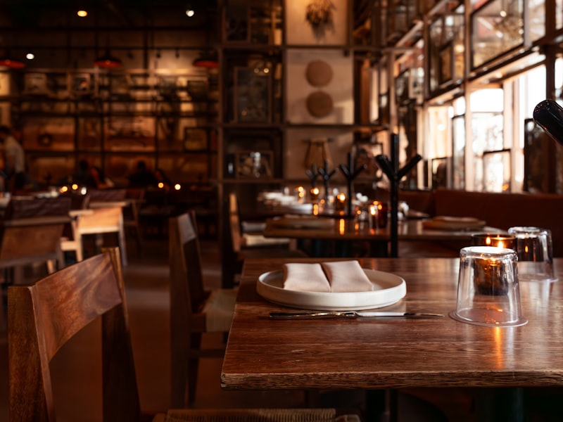

Pourquoi le vin naturel ?
Chez Racines, la cave suit la même logique que la cuisine : des vins vivants, faits par des vignerons qu'on connaît, sans intrants chimiques ni levures industrielles. Ce sont des vins qui bougent, parfois déroutants, mais d'une franchise rare. Avec une cuisine végétale, ils font des merveilles : là où un rouge tannique écrase un légume, un vin nature accompagne sans dominer.
Le printemps est la saison la plus délicate à marier. Les légumes nouveaux sont herbacés, légèrement amers, gorgés d'eau. Il faut des vins tendus, salins, peu boisés. Voici nos cinq accords du moment.
« Un bon accord, ce n'est pas le vin qui domine le plat ni l'inverse. C'est une conversation. Au printemps, elle se parle à voix basse. »
1. Asperges vertes & Jacquère de Savoie
L'asperge est le cauchemar des sommeliers — son amertume verte fait grincer la plupart des vins. La parade : une Jacquère de Savoie, vive, presque minérale, qui épouse l'amertume au lieu de la combattre. Servie fraîche, elle nettoie le palais entre chaque bouchée.
2. Petits pois & Pinot blanc d'Alsace nature
Le sucre du petit pois frais appelle un vin rond mais sec. Un Pinot blanc vinifié sans soufre, légèrement perlant, apporte la rondeur sans la lourdeur. C'est l'accord de la simplicité — celui qu'on conseille à ceux qui débutent dans le vin nature.
3. Fèves & pét-nat rosé
Pour la fève, on aime sortir des sentiers : un pétillant naturel rosé, sec, aux bulles fines. Sa fraîcheur tranche la texture farineuse de la fève et apporte une gourmandise printanière. C'est aussi notre accord le plus festif.

4. Morilles & Chardonnay du Jura
La morille, reine du printemps, demande de la profondeur. Un Chardonnay du Jura, légèrement oxydatif, aux notes de noix et de curry, prolonge l'umami du champignon sans jamais le couvrir. C'est l'accord le plus complexe de la sélection — et le préféré du chef.
5. Rhubarbe & Gewurztraminer sec
Pour finir sur une note acidulée, la rhubarbe en dessert s'accorde avec un Gewurztraminer vinifié sec. Ses arômes de rose et de litchi répondent à l'acidité du fruit, créant un contraste aromatique qui réveille le palais en fin de repas.
Tous nos accords sont proposés au verre, sur les conseils de Mathilde.
Réserver une table